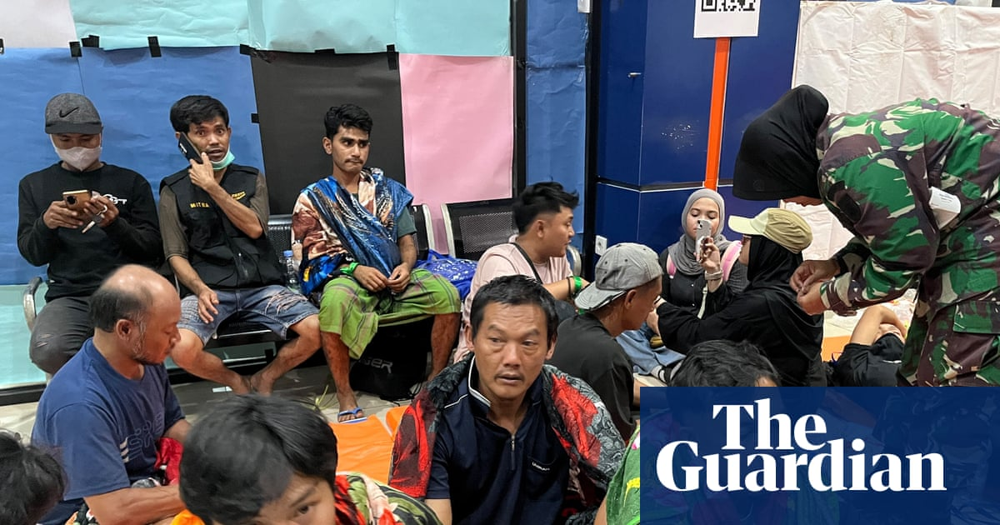

World · 14 Sep 2026
Indonesian Ferry Capsizes in Java Sea, Leaving Six Dead and 130 Missing

A ferry traveling between Java and Borneo capsized in severe weather, prompting a large-scale search and rescue operation.
A large-scale search and rescue operation is underway in the Java Sea after an Indonesian passenger ferry capsized in severe weather, leaving six people dead and 130 missing. Authorities confirmed that 107 people have been rescued so far following the disaster involving the Virgo Transport8 ship.
Voyage Details and Incident Timeline
The 390ft (119m) ferry was carrying a total of 243 people, consisting of 213 passengers and 30 crew members. According to data from maritime monitoring sites, the vessel departed from Surabaya at 10:33 on Saturday, bound for the South Kalimantan city of Banjarmasin. It was scheduled to complete the journey on Sunday at 14:00.
Contact was lost after the ship encountered bad weather in the Java Sea. The vessel was last reported to be approximately 150km (93 miles) south of Banjarmasin at around 02:00 on Sunday (18:00 GMT on Saturday). Authorities received the initial distress report at 04:10.
Search and Rescue Operations
A joint task force comprising Indonesia's search and rescue agency, the navy, maritime police, and other organizations has been deployed to the area. A total of 280 personnel, supported by ships and a helicopter, are actively searching for survivors. Additionally, all vessels operating in the Java Sea have been placed on alert to report any signs of passengers.
Some survivors have already been accounted for through coordinated maritime assistance. Misnah, a family member of one of the passengers, shared her relief after learning that her husband, Ahmad Supandi—a freight driver aboard the ship—had been safely rescued by the vessel MV Haida.
Families Await News at Ports
An operations post for handling the accident was established in the Trisakti Port area in Banjarmasin, where anxious families gathered to seek information about their loved ones. Rusmilawati, a local resident, travelled to the port to obtain news regarding eight relatives who were returning to Banjarmasin after visiting Islamic scholarly tombs in Java. She noted that her family's final communication came via a WhatsApp status update from one relative, who wrote about frightening waves and intense rocking.
Similarly, relatives of crew members gathered at Tanjung Perak Port in Surabaya. Fredy, whose youngest sibling Stevie Manuhua worked on the vessel as an onboard keyboard player to entertain passengers, stated that he had not yet received any official updates regarding his brother's whereabouts since they last spoke two days prior while the ship was docked.
Context of Maritime Transport in Indonesia
Comprising more than 17,000 islands, the Indonesian archipelago relies heavily on ferries as a common form of transport. However, marine transport accidents remain a recurring concern. Government data indicates that 111 ship accidents were officially recorded between 2020 and 2026. Recent incidents include the sinking of the KM Nurul Salsa in July within the waters west of Polassi Island in Selayar Islands Regency, South Sulawesi—where 58 people survived, three were found dead, and 14 remain missing—as well as a separate ferry fire off Madura island last month that resulted in five fatalities.
Sources
This article was produced by the C. O. Eric AI Newsroom from the cited sources. It is published only after automated evidence and safety checks.